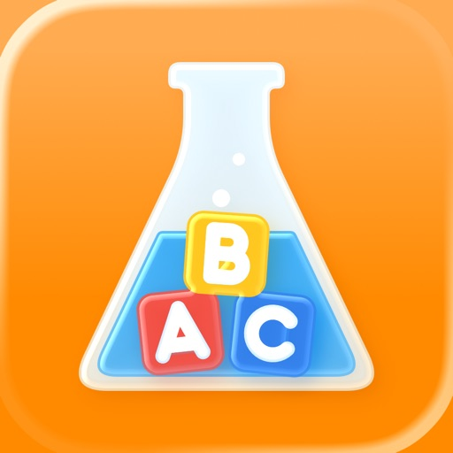
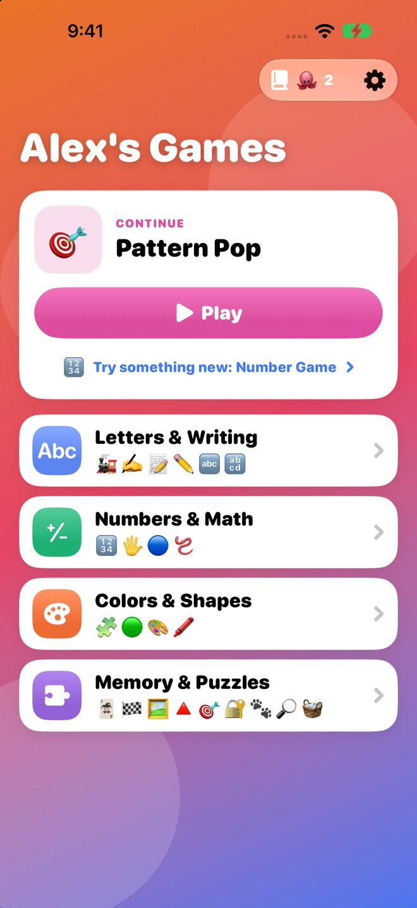
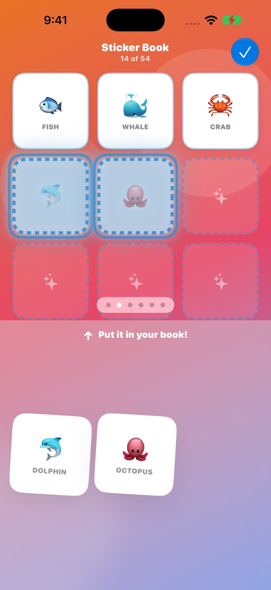
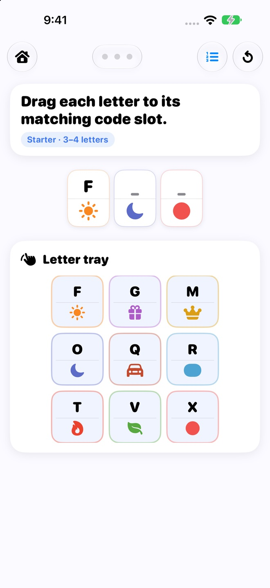

EXPLORE
Follow their curiosity.
Trace letters, count, sort shapes, solve a maze or make a pattern. Choose a difficulty level that suits your child and change it whenever you like.

Little Learners LabPlayful learning for ages 4–5
A collection of 23 learning games for curious little people. Explore letters, numbers, colors, shapes and puzzles through short, encouraging play.

Made for iPhone and iPad.
Take a look around

EXPLORE
Trace letters, count, sort shapes, solve a maze or make a pattern. Choose a difficulty level that suits your child and change it whenever you like.
CONNECT
Choose English, Spanish, French, Italian or Brazilian Portuguese. Add an optional second language so key vocabulary appears side by side.
COLLECT
Earn stickers by completing game sessions. Place them in a six-page Sticker Book and tap collected stickers to hear their names.
A little more to explore
Large, friendly controls. Short, calm sessions. No leaderboards or time pressure. Families can also turn selected photos into Memory Match and Photo Puzzle games.

Private by design
No accounts, ads, subscriptions, in-app purchases, analytics or tracking. Gameplay works offline. Selected photos and optional camera frames stay on the device and are never uploaded.
Read the privacy policyDesigned for children ages 4–5 with a grown-up’s help choosing settings. Camera access is optional for Hand Count; selected photos are optional for photo games. Screenshots show example game screens.
Apple and the Apple logo are trademarks of Apple Inc. App Store is a service mark of Apple Inc.